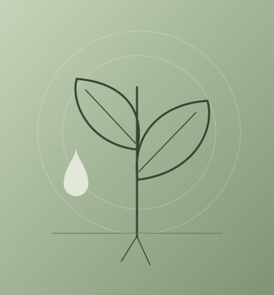

Plant stress physiology
Studying how environmental stress alters plant performance and physiological balance.
Questions, projects & scientific writing
My interest lies in how plants respond to stress, how biological systems interact, and how research insights can be communicated clearly.
Research interests
Studying how environmental stress alters plant performance and physiological balance.
Exploring how cellular and gene-level responses shape observable stress outcomes.
Investigating disease systems and plant–microbe interactions within sustainable crop science.

My thesis work focused on how seed priming influences salinity tolerance in lentil, with attention to stress physiology and plant response under salt exposure.
This project shaped my interest in how simple biological interventions can affect resilience and crop performance under stress.

I am increasingly interested in citrus Huanglongbing, a disease system that brings together plant pathology, symptom diagnosis, and plant–microbe interaction research.
It is one example of how plant health problems can connect laboratory science, field observation, and the broader challenge of crop disease management.
Scientific writing
My scientific writing experience includes translating research findings into accessible explanations and organizing complex ideas into a coherent narrative.
I value the skill of writing clearly and accurately, especially when communicating plant biology to readers who may not share the same technical background.